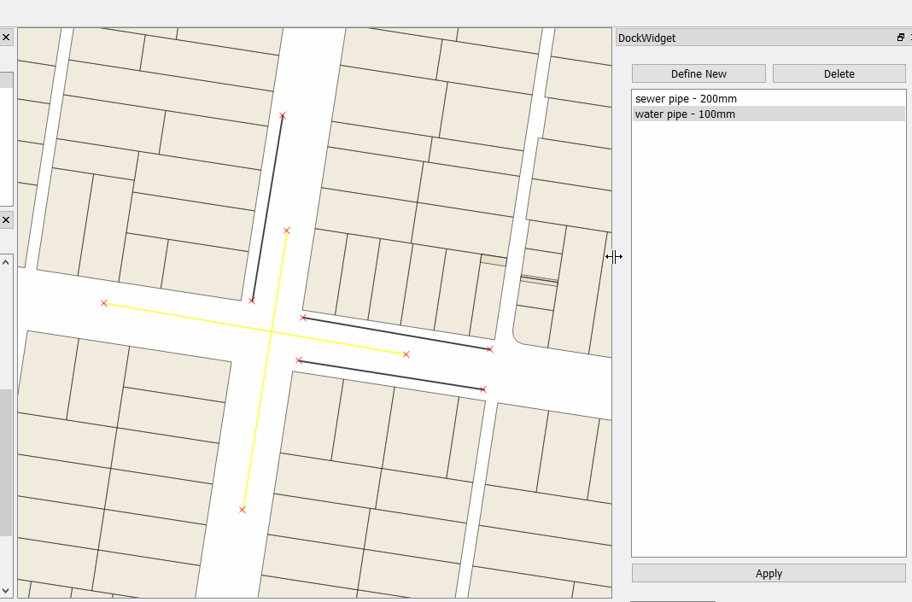

Using the QGIS API
Now it's time to implement some QGIS based logic.
Goals:
- Handle apply button
- Handling layer selection
- Update features based on set fields
- Refresh the map
First things first. We need to handle the apply_template button from the last step in our FeatureTemplates class.
In here we are going to grab the selected objects and apply the field data we have in our template to the objects.
layer = self.iface.activeLayer()
We get the selected objects using:
features = layer.selectedFeatures()
Tip: Look at the QgsVectorLayer API for what else is possible.
Putting it all together we have:
def apply_template(self, name, fields):
layer = self.iface.activeLayer()
features = layer.selectedFeatures()
for feature in features:
pass
Now we want to apply the value from the fields dictionary to the feature. Each feature will be of type QgsFeature
for feature in features:
for field, value in fields.itervalues():
feature[field] = value
layer.updateFeature(feature)
Loop over all the features and each field/value pair we have and update the values on the feature itself.
We use layer.updateFeature to update the feature itself with the new values. QGIS doesn't update the values in the layer
until we do this.
QgsFeature objects can use Python index lookup to reference/assign a field and value. feature[0] will also work to
get the value of the first field.
Finally we need to update the map
self.iface.mapCanvas().refresh()
Here is the complete method:
def apply_template(self, name, fields):
layer = self.iface.activeLayer()
features = layer.selectedFeatures()
for feature in features:
for field, value in fields.iteritems():
feature[field] = value
layer.updateFeature(feature)
self.iface.mapCanvas().refresh()
Run pb_deploy and reload the plugin in QGIS.
Load the sample project and test
Load the sample workshop.qgs qgis project found in the project folder for this workshop. This project already has some sample data we can work with.
The data in the sample project doesn't have any type or size data assigned.
We are now going to use the plugin to assign those values.
- Select some features using the select tool
- Enable editing in the toolbar
- Select a item from the list in the dock
- Hit apply/update
If everything is working you can see the new data being applied to the features on the fly. Win!

PRO TIP
You can also try things in the QGIS Python Console to get an idea on how things will work and then using them in your code here.